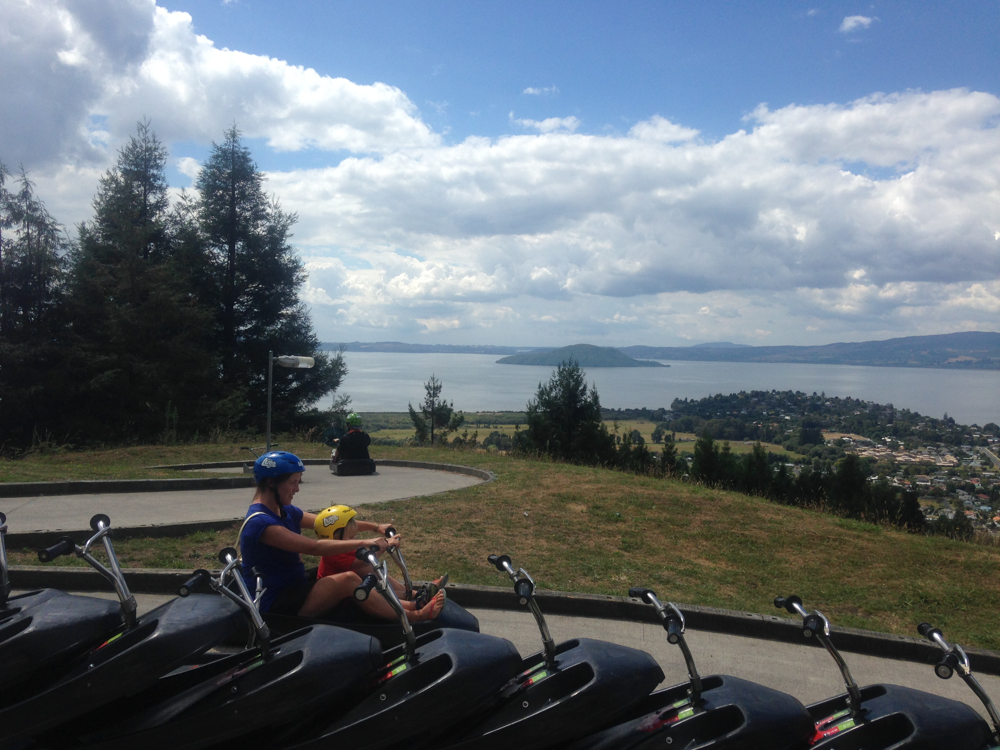
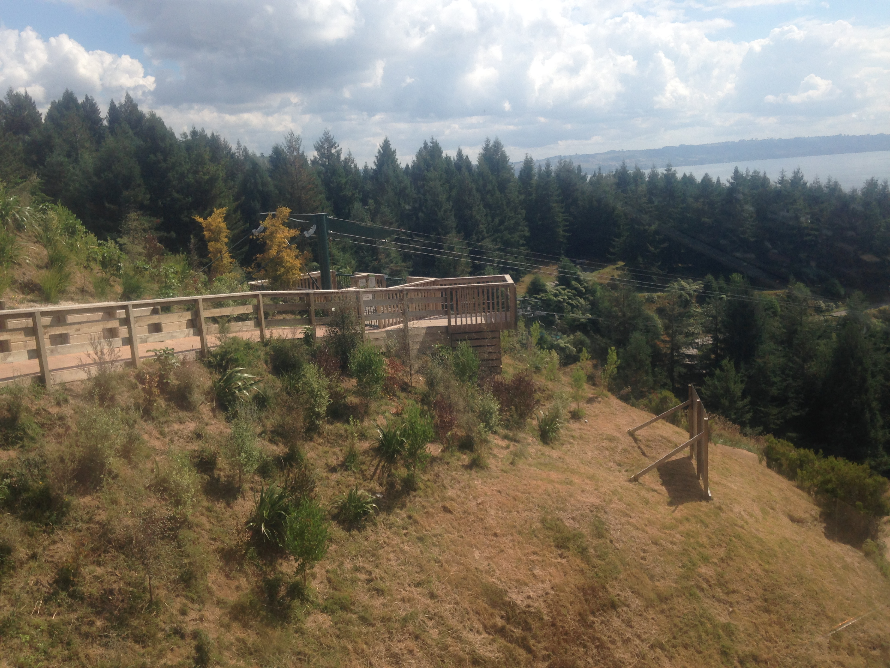
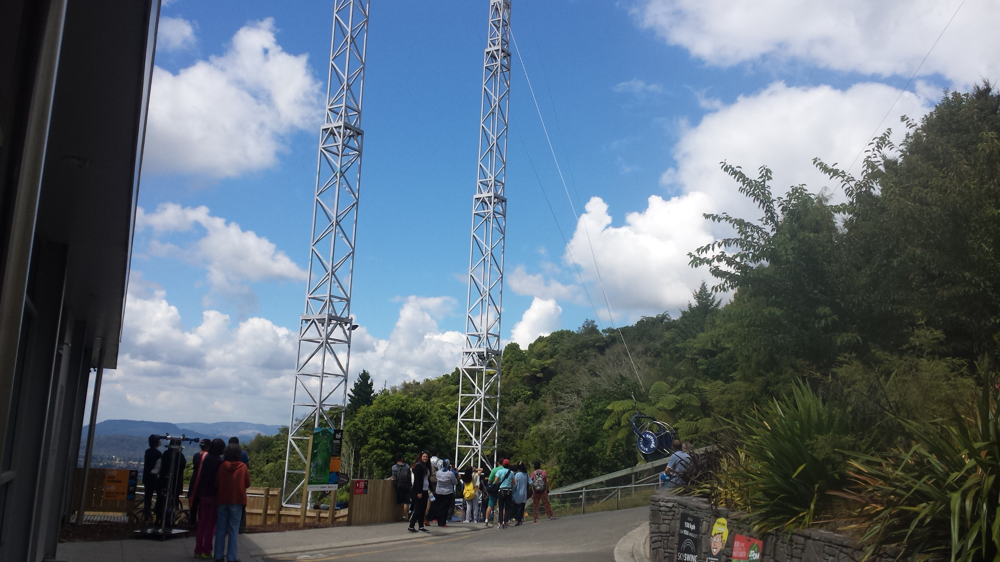
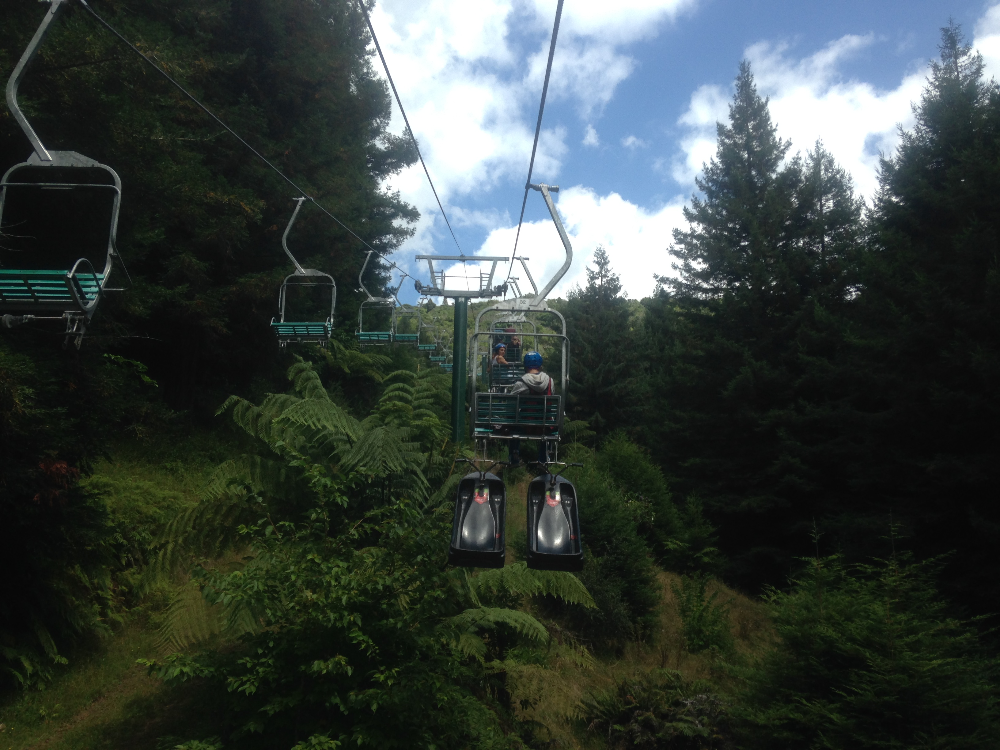

Skyline Rotorua has a few fun things to offer like luging, zip line and something called a Sky Swing.

The luge has three courses beginner, intermediate and advance. Each one increases in speed and difficulty. The tracks go down Mt Ngongotaha.
The beginner track also known as the scenic t rack has a slow pace to it and has many opportunities to stop and admire the views of Rotorua.
The intermediate track consists of a lot more speed and sharp turns, its great fun in the rain.
To get back up and go again you take a chair lift up which takes you over the tracks and between the trees.
Zipline
The Zipline is a 383 meter long zipline that goes down the side of Mt Ngongotaha.
As you take your flying position to fly at speeds of 80km/h you head towards a platform up in the trees.
After the speed thrilling fly down the zipline you get the choice of a 10 meter freefall on the quickjump or to walk down stairs to the bottom.
SkyswingThe skyswing is the newest attraction at the Skyline.

This swing is just a bigger version of a normal swing but with a catch. It has three seats and hoists you up 50 meters above the Skyline, showing the breath-taking views of Rotorua and the Rotorua Lake.
To let the swing drop you need to pull down on the release and when the swing drops you can get up to speeds of 150kph, it feels like you can fly and your stomachs in your throat but it’s so much fun you would want to do it again and again.
Pictures and Videos-

Luge
-
Luge
-

Luge
-
Luge
-
Luge